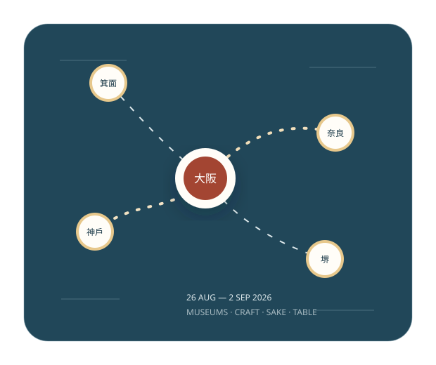

2026年8月26日—9月2日
奈良看佛教圖像與寺院制度；堺看商都、茶湯與金工；神戶看木工和灘酒；大阪看生活史與古代寺院；箕面則把長午餐接回山徑與瀑布。

行程不是逐個景點堆砌，而是按主題、開館時間、餐廳預約和體力安排。
奈良國立博物館先建立佛畫與造像框架；東大寺再把作品放回國家佛教、伽藍與寺寶保存的現場。
由宿院向北：千利休、弥助、堺刃物、鉄炮鍛冶。午餐後不折返，從七道離開。
上午看大工工具與身體技術；下午由白鶴、菊正宗到福壽，理解灘酒的工序與商業制度。
看時間軸、交通 buffer、核心項目與可刪項目。
每館只回答：先看甚麼、略過甚麼、何時離開。
按日整理 Google Maps 路線與個別地點入口。